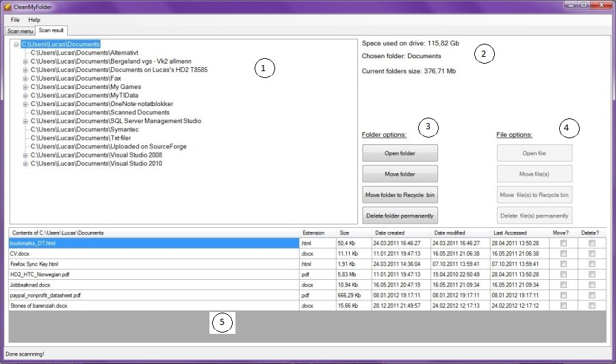
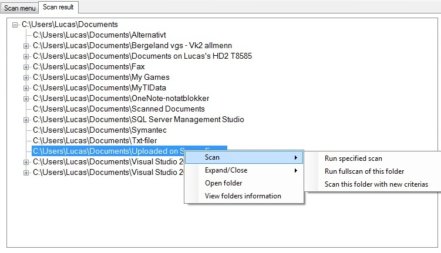
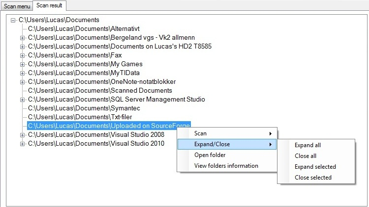

The resultscreen when scan is finished
The resultscreen when scan is finished
-
Treeview: Folders and subfolders are listed here

'Run specified scan' scans the selected folder based on criterias from settings screen.
'Run fullscan of this folder' ignores any criterias on settings screen.
'Scan this folder with new criterias' sets the selected folder, and displays the settings screen for selection of criterias.

Expand all the folders or expand the selected folders and it's subfolders.
Close all folders or close the selected folder and it's subfolders.
Open folder opens the selected folder, showing it's content.
View folders information
-
These labels displays the:
- size used on the folders drive
- name of the selected folder
- selected folders size (based on scan)
-
space that will be available when files are selected for moving/deletion.
This is hidden by default, but appears after files are selected for moving or deletion.
(Due note that space available is inaccurate when selecting files to be moved,
due to the fact that if its moved to a new location on the same drive, no space is earned.)
-
Buttons for folder options.
These buttons gets enabled when clicking the treeview (1),
but get disabled when clicking the datagridview (5).
The option for 'Move folder to Recycle bin' and
option for 'Delete folder permanently' may be disabled.
See Deleting folders -
Buttons for file options.
These buttons gets enabled when clicking the datagridview (5),
but get disabled when clicking the treeview (1). - Datagridview: The selected folders files is displayed here.
<Current version 1.0.0.0>